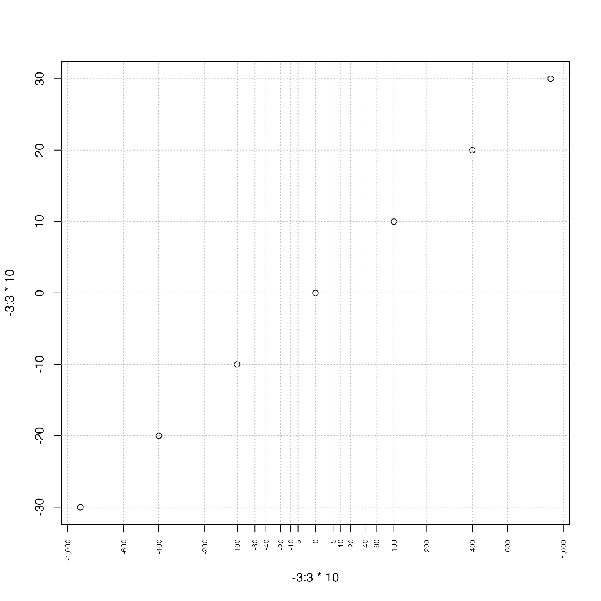

Determine square root axis tick mark positions, including positive and negative range values.
Usage
sqrtAxis(
side = 1,
x = NULL,
pretty.n = 10,
u5.bias = 0,
big.mark = ",",
plot = TRUE,
las = 2,
cex.axis = 0.6,
...
)Arguments
- side
integervalue indicating the axis position, as used bygraphics::axis(), 1=bottom, 2=left, 3=top, 4=right.- x
optional
numericvector representing the numeric range to be labeled.- pretty.n
numericvalue indicating the number of desired tick marks, passed topretty().- u5.bias
numericvalue passed topretty()to influence the frequency of intermediate tick marks.- big.mark
charactervalue passed toformat()which helps visually distinguish numbers larger than 1000.- plot
logicalindicating whether to plot the axis tick marks and labels.- las, cex.axis
numericvalues passed tographics::axis()when drawing the axis. The custom defaultlas=2plots labels rotated perpendicular to the axis.- ...
additional parameters are passed to
pretty().
Details
This function calculates positions for tick marks for data
that has been transformed with sqrt(), specifically a directional
transformation like sqrt(abs(x)) * sign(x).
The main goal of this function is to provide reasonably placed tick marks using integer values.
See also
Other jam plot functions:
adjustAxisLabelMargins(),
coordPresets(),
decideMfrow(),
drawLabels(),
getPlotAspect(),
groupedAxis(),
imageByColors(),
imageDefault(),
minorLogTicksAxis(),
nullPlot(),
plotPolygonDensity(),
plotRidges(),
plotSmoothScatter(),
shadowText(),
shadowText_options(),
showColors(),
usrBox()
Examples
plot(-3:3*10, -3:3*10, xaxt="n")
sqrtAxis(1)
